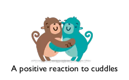

WILD IZUŚ (IZABELICUM FERUS S P.)

Behaviour
- Usally very shy, sometimes even
reluctant when spotting a stranger
-
A lovely monke to people Izuś likes
(but an agressive behaviour such as
biting was also noticed)
-
Reacts well to cuddles and kisses but
highly dislikes rapid movements and
touching its head
-
Easy to bribe with sweets and chicken
nuggets